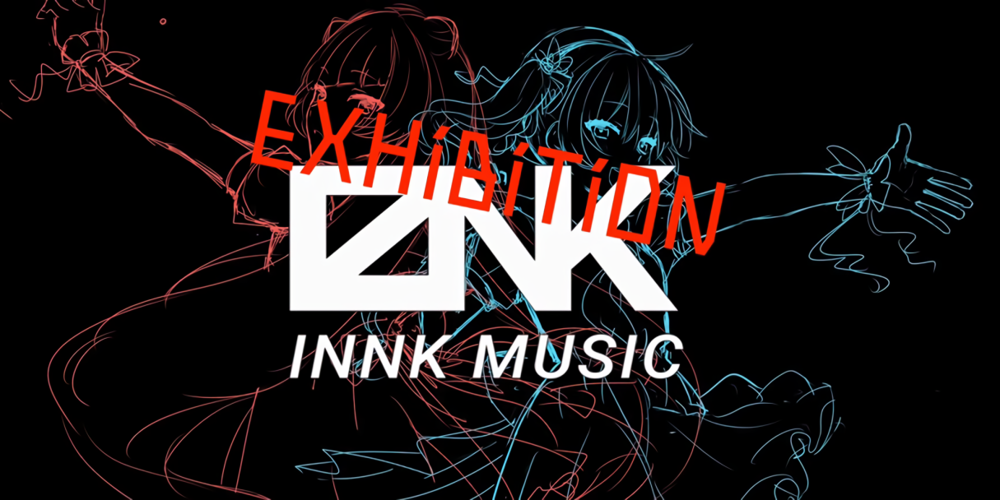
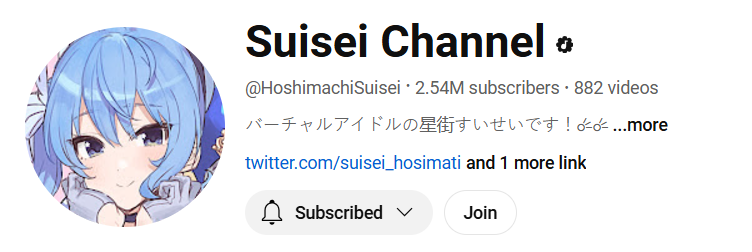

Hoshimachi Suisei is a Japanese VTuber who debuted on March 22, 2018.
Sui-chan's Twitter account and YouTube channel were created on March 18, 2018
and, on the same day, she introduced herself on Twitter and announced that her first video will be released around late March.
Starting off with a decent amount of followers,
she posted a Marshmallow link so that they could ask her questions in preparation for her first video and four days later, she released her introduction video.
While Suisei's channel was doing well for a indie Vtuber, her popularity was growing slower every livestream and she was unable to attract new viewers. Her savings were also slowly dwindling as she had to pay for everything she did herself. As a way to try and increase her popularity and keep her dreams alive, she joined a Hololive audition to try and join the agency as a corparate Vtuber. However, Suisei was very attached to her current online persona and community she had already built over the past 2 years. Becoming a part of Hololive would most likely mean she would have to debut under a new name and channel. Her last ditch effort was to contact Hololive and ask if there was anyway to keep her channel and become a part of the agency. After months of back and forth with Hololive and Suisei almost completely going broke, Hololive finally accepted her to become part of INNK music. A newer section of Hololive that focused on producing music. Suisei was allowed to keep her channel and also be indirectly part of Hololive. While INNK music would not last long, by the time INNK music was shut down Suisei had been officially accepted as a part of Hololive as a member of Generation 0.
Now in 2024, Suisei's youtube channel has a whopping 2.5 million subscribers which is ever increasing. She has grown so much from her early days and now even is able to host 3D lives and go on tour. She has also released 2 full ablums and many singles. Some highlights of her career are the many collaborations with gamer which she appaers in and the tour she is currently on being held in many locations.
